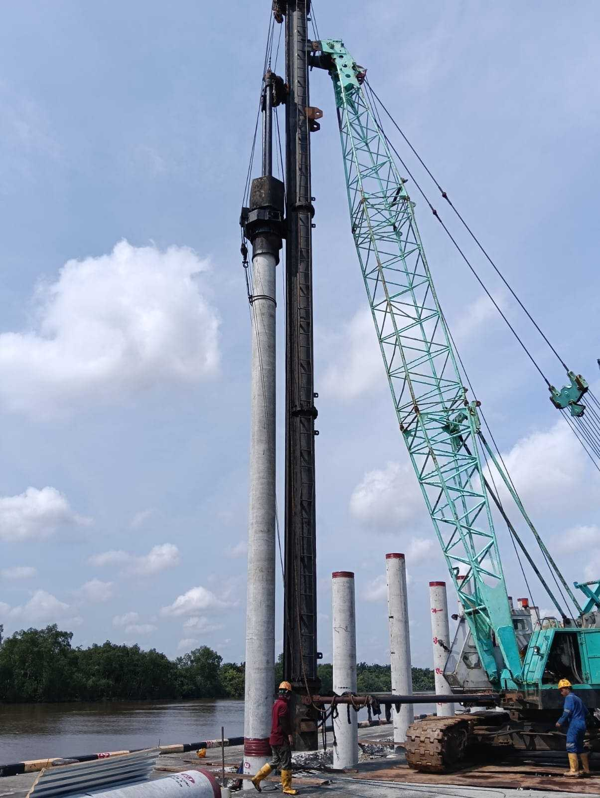
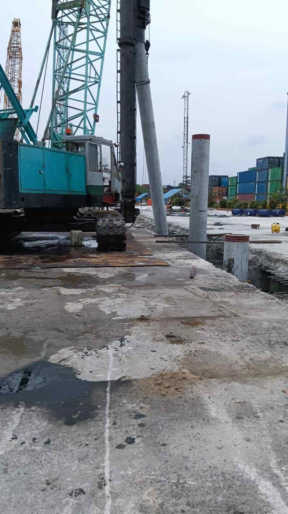
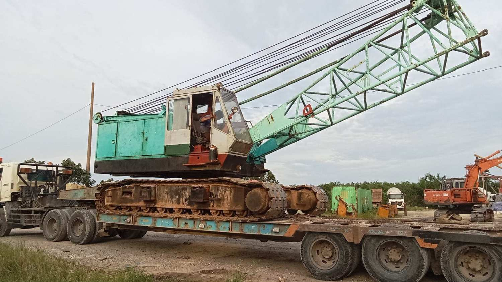
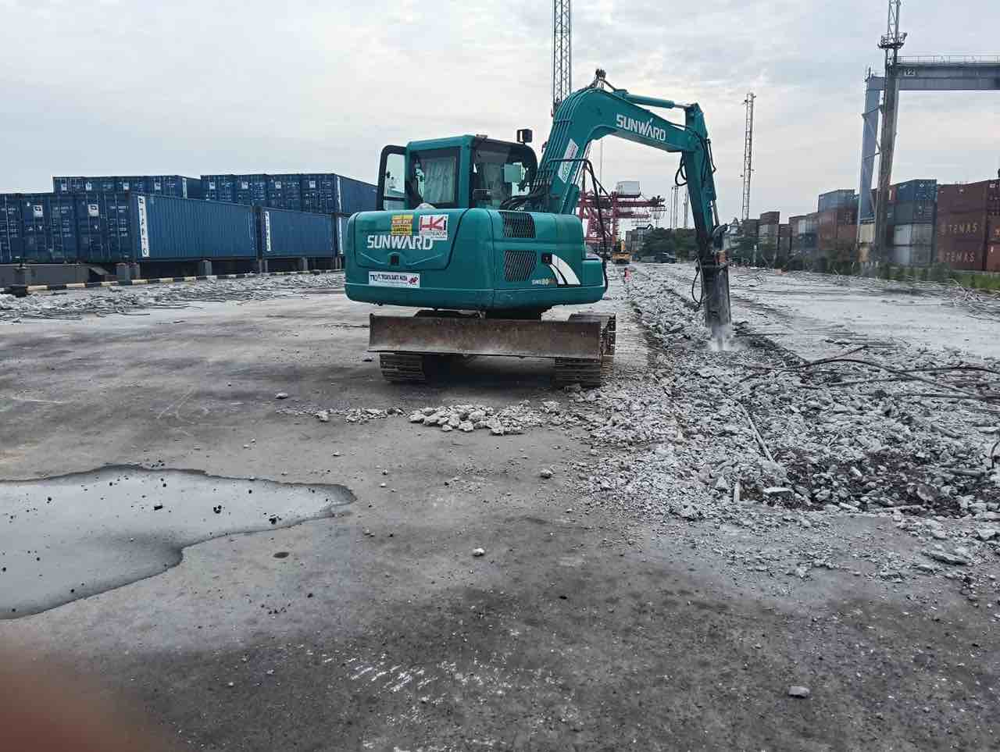
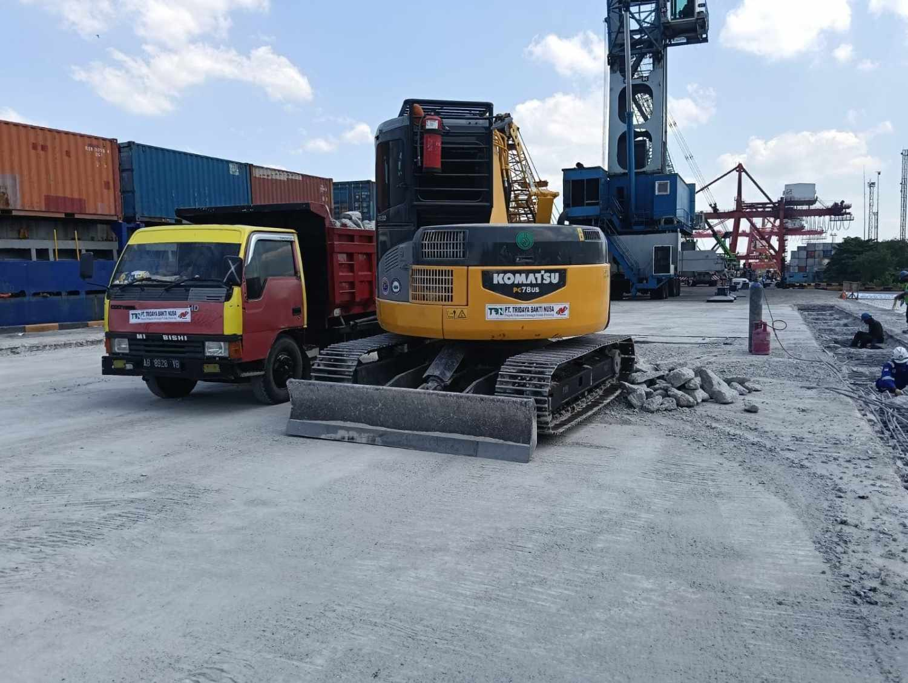

Perkuatan Dermaga Perawang
Perawang, Pekanbaru
No. Kontrak
001/SPK/NB/PERAWANG/...
Pemberi Kerja
PT. Nindya Beton
Periode
2025
Nilai Proyek
Rp 1.841.635.000
Detail Proyek
Proyek ini mencakup pekerjaan teknis mendalam untuk perkuatan infrastruktur dermaga di Perawang. Lingkup utama meliputi persiapan lokasi yang presisi, pembongkaran struktur beton lama menggunakan peralatan berat, serta pemancangan tiang fondasi baru (beton/baja) untuk menjamin stabilitas dermaga dalam jangka panjang.
Seluruh material sisa dikelola secara sistematis melalui metode daur ulang untuk memastikan efisiensi dan kepatuhan terhadap standar lingkungan kerja.
Galeri Dokumentasi





